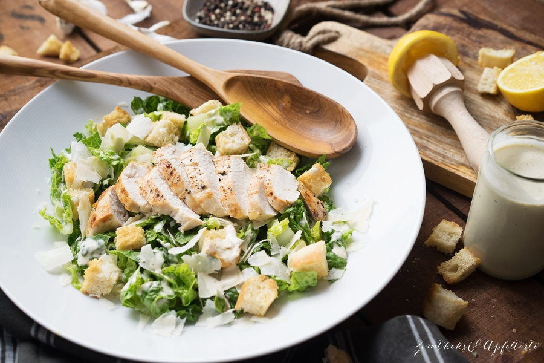

Cesar salat

Description
Caesar Salad is an internationally known salad attributed
to Italian-American Cesare Cardini.
The main ingredient is romaine lettuce served with a special
dressing and croutons and Parmesan cheese.
Ingredients
- 1 large head of romaine lettuce
- shredded parmesan cheese
- crisp croutons
- caesar salad dressing
Steps
- Rinse, dry and chop or tear the romaine into bite-sized pieces.
- Place in a large serving bowl and sprinkle generously with
shredded parmesan cheese and cooled croutons.
- Drizzle with caesar dressing and toss gently until
lettuce is evenly coated.